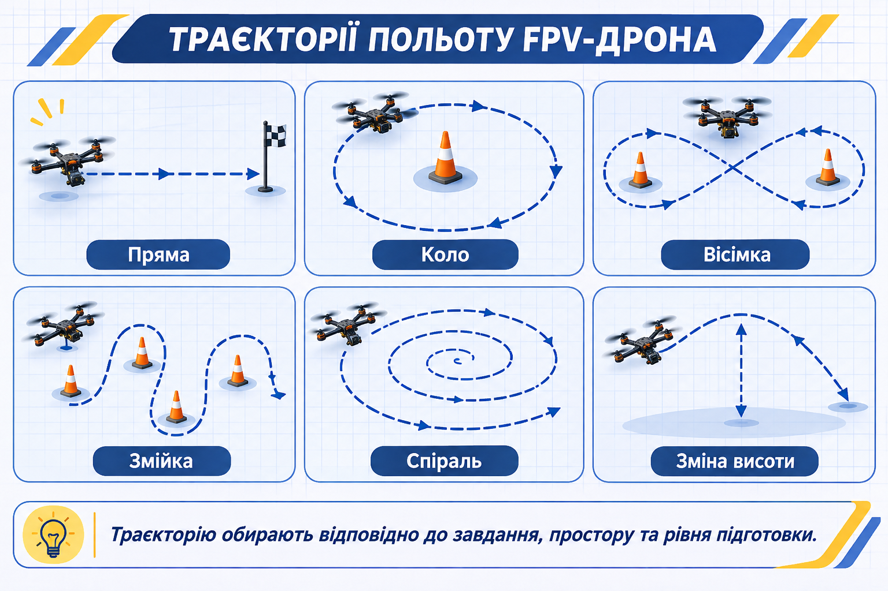

Старт
Місце початку руху.
Траєкторія — шлях руху дрона. Планування враховує старт, напрямок, висоту, повороти та безпечний фініш.

Місце початку руху.
Послідовність ділянок шляху.
Місце зміни напрямку.
Вертикальне положення відносно поверхні.
Заплановане завершення маршруту.
Обери послідовність точок маршруту.